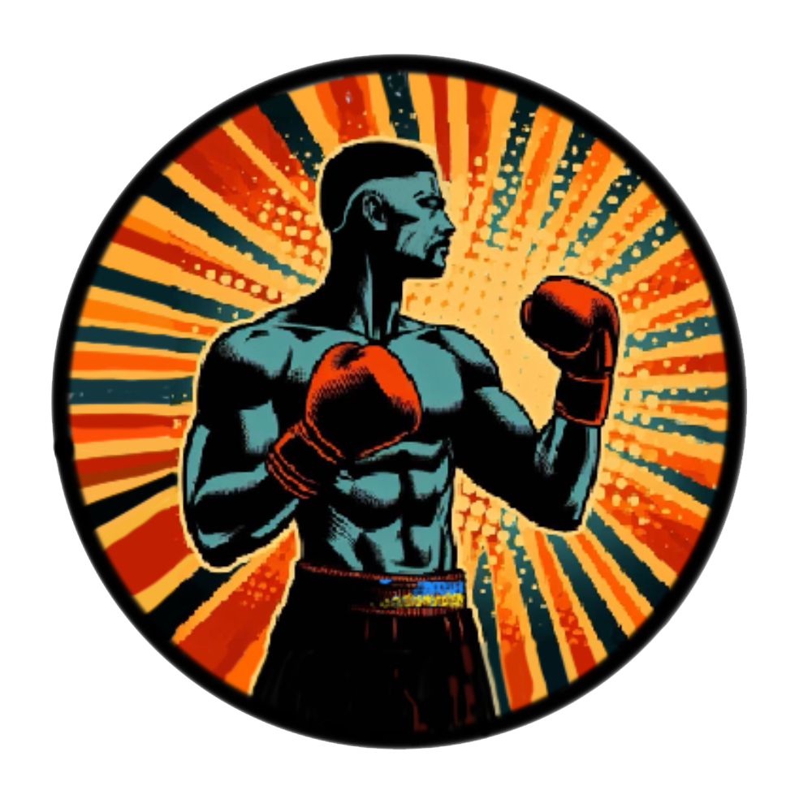

VUSCoin – це спортивний мем-коїн, який стає основою для створення цілої спортивної екосистеми. Вона вирішуватиме всі основні питання, пов'язані зі спортом. Монету створено ентузіастами, які захоплюються спортом, криптовалютами та сучасними цифровими інноваціями.
У цьому міні-додатку Telegram незабаром будуть доступні наступні функції:
- Спортивні новини (за найпопулярнішими напрямками).
- Цікаві факти з біографій найвідоміших спортсменів та історії про них.
- Спортивні квести з можливістю виграти додаткові монети проєкту.
- Онлайн-турніри з кіберспорту.
- Тренувальні відеоуроки від відомих спортсменів, які допоможуть вам підтримувати хорошу фізичну форму.
- Поради від дієтологів та тренерів.
- Унікальні NFT, які будуть цікаві не лише спортивній спільноті, але й усім, хто цікавиться спортом (а це близько 2 мільярдів людей).
- Можливість отримати або купити токени VUSCoin за виконання простих завдань у міні-додатку.
Ми створюємо велику спільноту для активних крипто-спортсменів, які прагнуть досягати успіху, досягати своїх цілей та брати від життя максимум. Пам'ятай: найбільший прибуток отримує той, хто входить у проєкт на ранніх стадіях і займає активну позицію в його розвитку.
P.S. Очікуйте ще більше крутих функцій! Будуть колаборації з відомими зірками спорту та безліч бонусів. Приєднуйся!